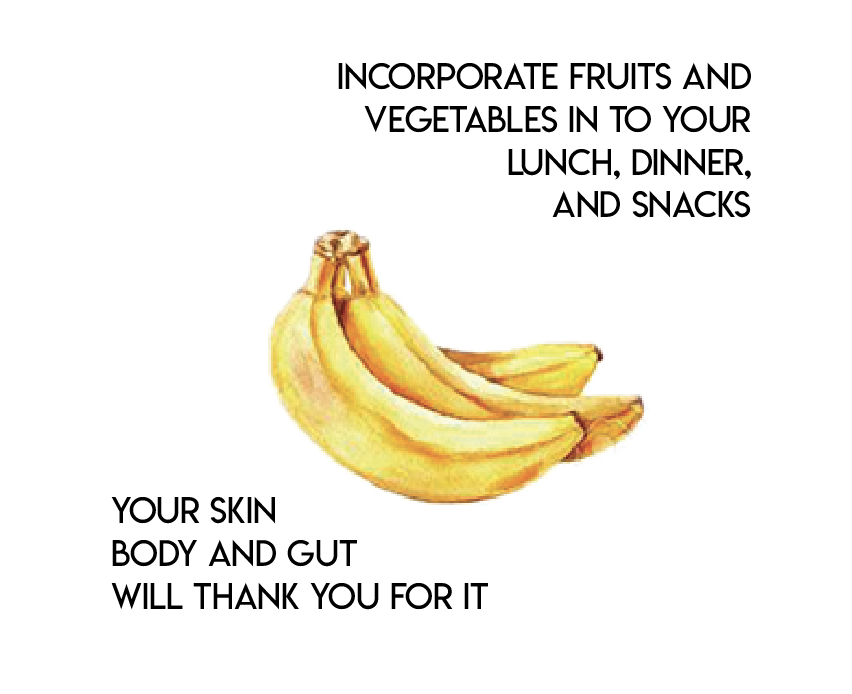

If you’re reading this, it is likely that you’re a college student. Rushed? On a budget? Unexperienced in the cooking department?
Here are a few recipes you can hold on to that will be quick, budget friendly, and quite easy to make. Healthy alternatives to the junk that is regularly easier to put into our bodies.
Wait, so coffee isn’t a meal? No.
You need your nutrients, especially when you’re spending hours sitting infront of a computer, in class, or procrastinating. The human body needs good feeding in order to focus and function. The following recipes bring together key nutrients that are easy to get your hands on.
What you’ll need? Basic utencils; one pan or skillet, knives and spoons for mixing etc. and maybe a cutting board but you can do without. Most of the recipes do require a stove or oven, but I have added cold recipes too.
The recipes collected share common ingredientes so you don’t overspend plus you get to use them up before they go bad. I’ve added my tips and hacks to make foods that seem boring extra tasty and easy to love.
healthy, easy and affordable.
Happy cooking!
Dorita
“my mission with this zine is to help make cooking easy, simple and affordable. i complied a list of “household items” or rather basic ingredients to always have in the kitchen so you dont have to purchase everytime you buy groceries and your grocery run is quick and cheap.”
One way to address both of these factors is to think about food as information. This prompts us to ask:
What signals is this food sending my body?
Will this food create and support health or contribute to the development of dysfunction, symptoms, and disease?
Asking these questions can help you choose foods to include and motivate you to close the action gap!

What does food do in our bodies?
The nutrients in food enable the cells in our bodies to perform their necessary functions. This quote from a popular textbook describes how the nutrients in food are essential for our physical functioning."Nutrients are the nourishing substances in food that are essential for the growth, development and maintenance of body functions. Essential meaning that if a nutrient is not present, aspects of function and therefore human health decline. When nutrient intake does not regularly meet the nutrient needs dictated by the cell activity, the metabolic processes slow down or even stop."
In other words, nutrients give our bodies instructions about how to function. In this sense, food can be seen as a source of "information" for the body. Thinking about food in this way gives us a view of nutrition that goes beyond calories or grams, good foods or bad foods. This view leads us to focus on foods we should include rather than foods to exclude.Instead of viewing food as the enemy, we look to food as a way to create health and reduce disease by helping the body maintain function.
Bianca Valle
PRESS ME!
“I really, truly think an apple is an apple, and I rather someone eating
a non-organic apple instead of reaching for a bag of chips.”
Interviewing Bianca Valle
Q: What is the first thing you do when you wake up?
A: “I drink some water and have matcha tea”
Q: What is the last thing you do before you go to bed
A: “I try not to drink too much water and try not to eat too late.”
Q: What’s in your fridge?
A: “In my fridge I have kimchi, apple cider vinegar, squash, broccoli, eggs. I have sweet potatoes and bananas outside of the fridge.”
Q: What is your most important meal of the day?
A: “Breakfast! I have a big breakfast, I love breakfast. So that way you can have a small dinner.”
Q: What do you think about the Celery Juice trend, is it a myth?
A: Celery Juice thing is wonderful, it is very cleansing but any green juice is cleansing with lots of fiber is going to be cleansing. Anything in the food kingdom, “Not one food is going to save you. It’s about having a mix of all the healthy foods”